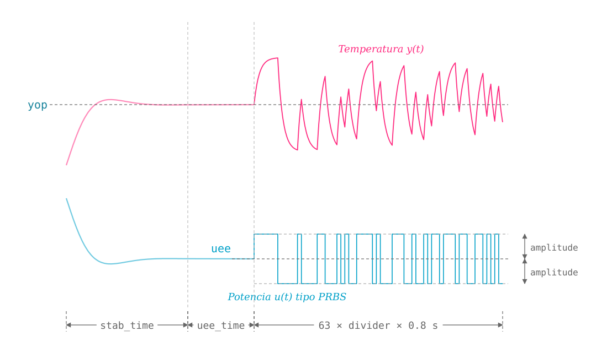

prbs_open
ThermoLab.prbs_open — Function
prbs_open(sys::ThermalSystem; yop=50, amplitude=5, stab_time=90, uee_time=10, divider=25)Configura y ejecuta un experimento de identificación en lazo abierto, excitando la plataforma ThermoLab con una señal binaria pseudoaleatoria (PRBS) de potencia alrededor de un punto de operación, como se ilustra en la figura:

Igual que en step_open, el experimento tiene tres fases: estabilización en la temperatura yop (durante stab_time) con un PI interno del firmware, retención de la potencia de operación $u_{ee}$ (durante uee_time), y finalmente la señal PRBS, que alterna entre $u_{ee}$ - amplitude y $u_{ee}$ + amplitude.
Los parámetros de esta función son:
Argumentos
sys::ThermalSystem: objeto que representa la plataforma.
Argumentos de palabra clave
yop::Real=50: temperatura del punto de operación, en °C.amplitude::Real=5: amplitud pico de la señal PRBS, en % de potencia.stab_time::Real=90: duración en segundos de la fase de estabilización.uee_time::Real=10: duración en segundos de la fase de retención.divider::Int=25: número de periodos de muestreo durante los cuales se mantiene cada bit de la secuencia PRBS (a mayor valor endivider, se aplica una señal más "lenta" y de mayor duración total).Note que el tamaño de la secuencia PRBS es fijo (tiene 63 valores ya grabados en el firmware de la plataforma) y cada uno de esos valores se repite un número
dividerde veces. Condivider=25la señal PRBS dura $63 \times 25 \times 0.8 = 1260$ s.
Retorna
(t, u, y): tupla de vectoresVector{Float64}con el tiempo (s), la potencia aplicada (%) y la temperatura medida (°C) durante la señal PRBS. El tiempotse mide desde el inicio del experimento (incluidas las fases de estabilización y retención), igual que en el archivo CSV guardado.
Notas
- Esta función se usa para identificar el modelo dinámico de la plataforma por medio de
get_model_prbs. El usuario también puede disponer de los datos para usar otros algoritmos de identificación de sistemas como los del paquete ControlSystemIdentification.jl. - Los datos del experimento se guardan en un archivo CSV en
datafiles/ThermoLab_prbs_open_exp.csv. - Al terminar, la referencia se fija en 40 °C y se reactiva el controlador cargado en la plataforma.
Lanza
ErrorExceptionsiyopestá fuera del intervalo admitido porpower_from_temp, o si la potencia de operación estimada másamplitudesupera el 100 %.
Ejemplo
Primero, asegúrese de haber importado el paquete ThermoLab y de haber definido el sistema, así:
using ThermoLab
sys = ThermalSystem();Luego, obtenga la respuesta a la señal PRBS en lazo abierto así:
t, u, y = prbs_open(sys; yop=50, amplitude=4, divider=25);